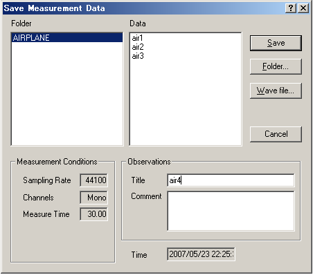
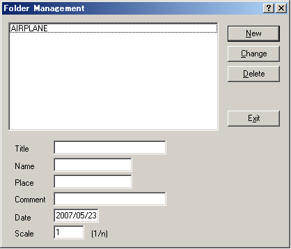

DSSF3 > RA > Running ACF > Measurement guide
Saving the measurement data
Click the "Save" button on the Running ACF window, then the "Save Measurement Data" dialog opens. To save data, 1) enter the title and comment on the data, 2) select the folder, and 3) click the "Save" button. Once the data is saved, the acoustical parameters can be calculated by using SA (Sound Analyzer)*. To save sound as a wav format, click the Wave File button.

When you make a new folder, click the "Folder..." button on the "Save Measurement Data" dialog. Folder Management dialog opens as in the figure below. Enter the title of the folder and click "New" button.

DSSF3 > RA > Running ACF > Measurement guide